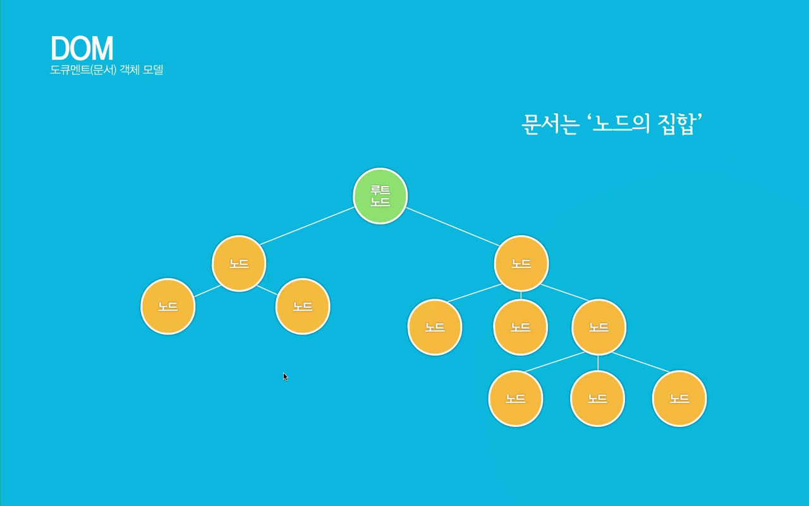
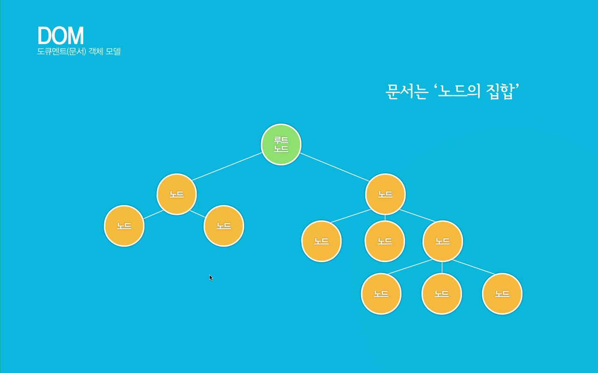

자바스크립트기초_내장객체_문서객체(document)
DOM(Document Object Model)은 넓은 의미로는 웹브라우저가 html을 인식하는 방법이고, 좁은 의미로는 웹문서안에 있는 요소(객체)들의 집합이다.
웹브라우저(크롬, 사파리, 파이어폭스, 오페라, 익스플로러, edge, 모바일 브라우저)마다 DOM구현이 호환되지 않아서 W3C에서 DOM에 대한 표준규칙을 작성하였다.
1. DOM tree구조의 이해
DOM은 노드(node)들의 집합이라고 할 수 있으며, DOM의 노드에는 요소노드, 속성노드, 텍스트노드로 구성되어 있다. 노드는 DOM의 구조를 이루는 최소단위이며, 이 노드들의 집합체가 DOM이라고 할 수 있다.
2. DOM을 구성하는 기본원칙
- 모든 html태그 = 요소(element)노드이다.
- html태그에서 사용하는 텍스트 내용은 자식 노드인 텍스트(text)노드이다.
- html태그에 있는 속성은 자식 노드인 속성노드이다.
- 주석은 주석(comment)노드이다.

 


3. document객체의 메소드
- open() - 데이터를 보낼 준비
- close() - 문서에 데이터출력을 마무리함
- clear() - 브라우저에서 문서를 지움
- write() - 문서에 데이터를 출력
- writeln() - 문서에 줄(line)바꾸기를 포함하여 데이터를 출력함
4. document객체의 속성들
- domain - 현재 문서가 있는 서버의 도메인 이름
- title - 현재 문서의 제목
- bgColor - 문서의 배경색
- fgColor - 문서의 글자색
- linkColor - 문서의 링크 글자색
- alinkColor - 링크 클릭했을 때 글자색
- vlinkColor - 방문했던 링크의 글자색
- anchors - 문서의 anchor들의 배열
- cookie - 쿠키에 대한 정보
- url - 문서의 url주소
실습1. 현재 작성 중인 문서의 정보 알아보기
문서의 title정보과 URL정보 출력
실습2. 버튼 클릭 시 문서안의 글자색, 배경색 변경하기 (토글버튼 0,1) => 다크모드 버튼
실습3. 버튼 클릭 시 h3태그만 선택하여 글자색 '빨강'으로 변경하기
실습4. 버튼 클릭 시 li태그만 선택하여 글자색 '파랑'으로 변경하기